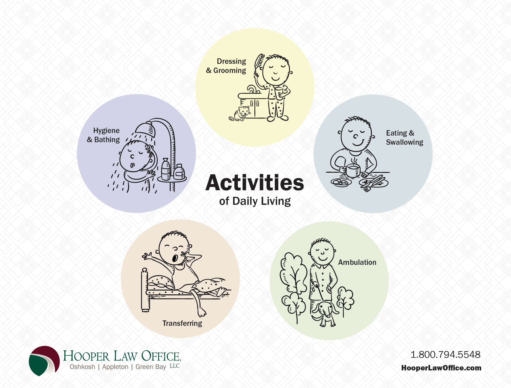
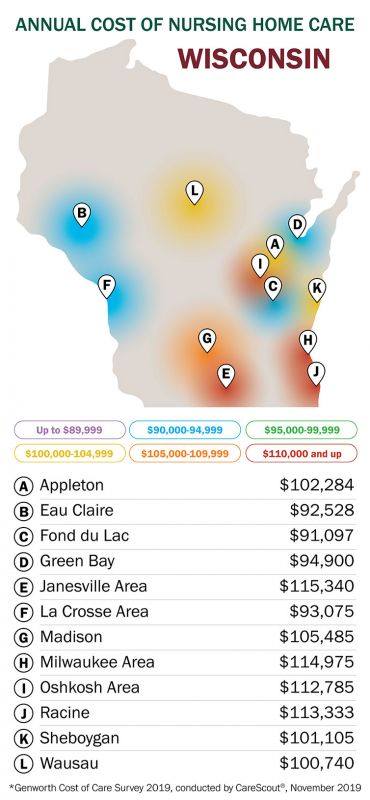

Nursing Home Asset Protection Planning
Table of Contents
- Planning for Long-Term Care
- Levels of Care
- Long-Term Care Options and Costs
- How Much Does Long-Term Care Cost?
- Paying for Long-Term Care
- Does Medicare Pay for Long Term Care?
- Medicaid Eligibility in Wisconsin
- Prospective Medicaid Planning - Planning in Advance
- Emergency Medicaid Planning
- Medicaid and Estate Recovery
- Will the Nursing Home Take My House?
- Choosing a Long-Term Care Facility
- What is Long-Term Care Insurance?
Why Should I Plan for Nursing Home Costs?
Planning for Long Term Care
The high cost of Long-Term Care has made planning a critically important issue for most middle-class seniors and their families. In fact, most seniors will likely require some form of Long-Term Care. Sadly, many of them are unprepared for the significant financial burdens it places on their family’s hard-earned savings. Financial devastation looms large for a family facing ongoing care at a rate of $10,000 or more per month.
Levels of Care
A person who requires ongoing assistance with some of the most basic activities of daily living (ADL) such as eating, personal hygiene (bathing and grooming), dressing, maintaining continence (toileting), or transferring (getting in and out of bed or a chair) often shows improvement upon transitioning to an assisted living facility or skilled nursing facility.

Long Term Care can be provided in a variety or combination of environments. Three of the most common are:
- Care brought into the home, which ranges from a few hours a day to 24 hours a day
- Assisted living facilities, which offer differing levels of intermediate care
- Skilled nursing facilities, which provide 24-hour medical care and monitoring
At Home Care
At-home care is a desirable option in order to maintain as much of a normal home environment as possible for the person who needs care. It can be either the most cost-effective or the most expensive option, depending on the amount of care that is needed. Fees can increase over time or after a health event has occurred. The person who needs care must continually evaluate whether to continue to reside at home or transition to a facility. Additional one-time fees also need to be taken into consideration. Modifying a home in order to provide the best environment for mobility issues and safety can add significant expenses. Isolation can also become a concern if the person has limited entertainment outside of television and no contact with anyone other than the caregiver.
If home modifications are not an option, Senior Housing is an alternative for aging in place.
Like At-home care, this option allows caregivers to be brought into the home with the added benefit that the home is already modified for mobility and safety. Home maintenance, lawn care, and snow removal are also typically provided.
Assisted Living
Assisted living facilities provide that in-between care option where the person has an at-home environment with the added security of medical personnel close to assist with activities of daily living. There are three types of assisted living facilities;
- Adult Family Homes (AFH),
- Residential Care Apartment Complexes (RCAC), and
- Community Based Residential Facilities (CBRF).
These types of facilities also provide social opportunities to keep residents engaged and active. Some facilities specialize in particular medical conditions, such as memory care or mobility issues.
Skilled Nursing
Skilled nursing facilities provide around-the-clock licensed medical staff to care for the individual. They are also commonly used for rehabilitation purposes if a person has had a health event that requires therapy before he or she is able to return home safely or transition to an assisted living facility. This level of care tends to be the most expensive institutional option for Long-Term Care needs.
With advanced planning, you and your family can maintain control of your options. Planning is best done five years in advance; however, even if you are currently residing in a facility, you still have options.
Long Term Care Options and Associated Costs
|
Cost |
Care Option |
Billing Structure |
Accommodations |
Benefits / Disadvantages |
|
$ |
At-Home Care |
Hourly rate of caregiver and home modifications |
Home can be easily converted for mobility issues, wheelchair access, and caregivers |
Comfort of home; Level of social interaction |
|
$$ |
Senior Housing |
Monthly rent |
Home environment |
Nearby caregivers that can be hired to provide hourly care; conveniences such as yard work and snow removal |
|
$$$ |
Adult Family Housing (AFH) |
Monthly rent |
Home environment |
Maximum of four residents per home, up to seven hours per week of nursing care |
|
$$$ |
Residential Care Apartment Complex (RCAC) |
Monthly rent plus meals and emergency services |
Apartment complex |
Conveniences such as one-to-two group meals per day, full apartment with kitchen, care can be arranged |
|
$$$$ |
Community Based Residential Facility (CBRF) |
Monthly rent plus care package costs |
Group home with separate rooms (no kitchen) |
Various care packages available based on the extent of care needed, all meals are provided, some specialize in memory care with alarmed doors |
|
$$$$$ |
Skilled Nursing Facility |
Daily or flat monthly rate |
Semi-private or private rooms similar to hospital rooms |
24/7 medical staff; may have a roommate |
|
$$$$$$ |
At-Home Care |
Hourly: 24/7 |
Significant home modifications likely |
Multiple caregivers with rotating shifts to maintain the level of care needed |
Disclaimer: This tends to be the progression of cost of care and types of facilities; however, there can be exceptions to the cost of care based on the care needs of the individual.
How Much Does Long Term Care Cost?
Source: Genworth Cost of Care Survey 2019
Paying for Long-Term Care
The costs of Long-Term Care can be paid by one of several possibilities. Long-Term Care can be very draining on the person’s finances, but there are options available to assist you with those costs. Let’s focus on three main ways to pay for Long-Term Care which include self-pay, veterans' benefits, and Medicaid.
Self Pay
First, you can plan to self-pay the costs of your own Long-Term Care. A person uses the money from their financial portfolio to cover the costs. This can include retirement accounts, investment accounts, savings, and in extreme cases, selling personal property such as collector items or real estate. This option is best utilized by a person who has enough monthly income in retirement to cover the cost entirely by income alone or very close to it. Otherwise, the cost of care ends up causing the person to spend down their assets until very little remains.
Learn about how your retirement accounts may impact Long-Term Care Planning
Long-Term Care Insurance
An option available to assist with out-of-pocket care costs is Long-Term Care Insurance. Long-Term Care Insurance is an optional investment that will cover the costs of certain kinds of care under a specified set of criteria. Long-Term Care Insurance allows the person to maintain private pay status at a facility and can extend the person’s other assets to make the money last longer. However, this type of insurance can be costly, and it is not an option available to everyone.
Veteran's Benefits
An alternative to paying out-of-pocket is the Department of Veteran’s Affairs Improved Pension Program often referred to as Aid and Attendance. This benefit is available to Veterans and Spouses of Veterans who served during a defined wartime period to help offset the costs of their Long-Term Care. There are qualifications for the program associated with military service, income, assets, and a need for care in order to receive benefits from the program. The pension is tax-free income and is paid directly to the veteran or spouse, so they maintain private pay status.
Learn More about Benefits Available to Veterans and Their Surviving Spouses.
Medicaid
Medicaid is another program available to everyone who needs care and financially qualifies. This program pays toward the costs of Long Term Care when a person can no longer afford to cover the cost on their own. When a person has qualified, almost all of their monthly income is paid to the facility and Medicaid makes up the difference. However, the financial qualifications are very stringent and most people do not qualify until they have spent a significant amount from their own estate. There are options available, so a person does not have to spend through everything. Planning around Medicaid allows a person to have funds available for themselves, their spouse, and all the expenses Medicaid does not cover.
Does Medicare Pay for Long Term Care?
Medicare is a federal health insurance program for individuals over the age of 65 or for those who are disabled. Medicare pays only for rehabilitative care; it does not pay for “custodial” nursing home care.
To qualify for Medicare coverage, your nursing home stay must be preceded by a hospital stay of at least three days. Medicare will pay 100% of the cost for your first 20 days of nursing home care when receiving physical therapy or other rehabilitative treatment. Medicare will then pay only a portion of the next 80 days of your nursing home care. After 100 days, all Medicare benefits stop. Medicare benefits will also stop before the 100-day period elapses if you are not making any progress toward your rehabilitation and recovery.
Medicare is not designed to pay for long-term custodial care, and it will not provide coverage beyond these limits.
Medicaid Eligibility in Wisconsin
The other option to pay for care is Medicaid. A joint federal-state program, Medicaid provides medical assistance to low-income individuals, including those who are 65 or older, disabled or blind. Medicaid is the single largest payer of nursing home bills in America and serves as the option of last resort for people who have no other way to finance their Long-Term Care. Although Medicaid eligibility rules vary from state to state, federal minimum standards and guidelines must be observed.
While Medicaid eligibility with respect to Long-Term Care was not difficult in the past, there has been a steady drift towards more complex and restrictive rules, the latest being the Deficit Reduction Act of 2005 which went into effect in 2006.
These changes have resulted in complex eligibility requirements for those in need of Medicaid benefits. It’s no longer as easy as reviewing one’s bank statements. There is a myriad of regulations involving look-back periods, income caps, transfer penalties, and waiting periods to plan around.
Our law firm has the experience and the expertise to help avoid the financial ruin associated with the high cost of Long-Term Care. Contact us today to start the process of understanding the issues surrounding Medicaid eligibility and to implement the planning and application process.
Prospective Medicaid Planning - Planning In Advance
Prospective Medicaid planning is planning ahead and organizing your assets with the expectation that you may need Long Term Care.
It is an opportunity to stop, review, and organize your assets, and to decide which is the best path that will allow you to remain in charge of your future. It is a chance to decide who, if needed, will be able to manage your finances and make medical decisions if you have a period where you are not able to do so for yourself.
Since the timing of the care of each spouse may vary, prospective planning is also done in case one spouse needs Long-Term Care and the other spouse stays in the community and is able to live a comfortable life.
Ideally, there should be at least five or more years from the time you start planning before you anticipate needing care; however, even if you don’t have five years, there are likely still options available for “Emergency Planning” link to emergency planning
When engaging in this type of planning, there are four main areas that need to be considered.
First, who would make financial and healthcare decisions for you if you are unable to do so for yourself? Now is a good time to create or update any Power of Attorney for Healthcare and Durable Financial Power of Attorney documents.
Second, take a look at the type and value of your assets, especially retirement accounts. An inequality of asset accounts between spouses can eventually leave one spouse with access to very little money for their day to day living.
Third, consider any assets that you want to protect from Long Term Care costs. If there is a family cottage or a family farm that you don’t want to sell to pay for your care, then planning needs to be done to protect it for future generations. This is also a good time to look into Long-Term Care insurance and decide if it is an option for you and your spouse.
Prospective planning gives you the most options because you have the time to plan. It gives you peace of mind and takes away the worry of the unknown.
Emergency Medicaid Planning
Emergency Medicaid Planning occurs when steps are taken to preserve a person's assets when they are already in a Nursing Home or will be needing care shortly.
The most important thing you can remember is that it is never too late to seek advice. Even if a person has been in a long-term care facility for years, there are still options for preserving some of what they have left. Making sure you maintain control over where and how you or a loved one receives care can be done.
It is important to work with an experienced Elder Law Attorney, preferably one with extensive experience in Emergency Medicaid Planning in the county where the application will be processed.
Schedule Your Complimentary Emergency Medicaid Planning Consultation
Medicaid and Estate Recovery
Estate Recovery is when the State attempts to recover costs that were paid to a facility on behalf of the individual. Some of the ways the State may seek repayment by placing a lien against a home or filing a claim against the estate.
Changes to the Wisconsin Estate Recovery Program effective August 1, 2014, now allow for the following assets to be part of the Estate Recovery Program:
- Joint Tenancy Property
- Life Estates
- Life Insurance Policies
- Marital Property
- Revocable Trusts
- Tax Equity and Fiscal Responsibility ACT Liens
- Other Non-Probate Property
Will the Nursing Home Take My House?
There is a lot of bad nursing home advice circulating, and much of that bad advice centers around the family home. Often, couples are told that they should “sign the house over to the kids, so the nursing home doesn’t get it." There are several problems with this advice.
Before getting into the specifics of why gifting your home is a terrible way to protect the property, you need to understand how Medicaid looks at owning a home.
For purposes of determining qualification, Medicaid will exempt the personal residence of an applicant, which means you can own a home, but they will not count the value of it. For married couples, you could be living in a house valued at $500,000 or more and still receive Medicaid as long as the other qualifications are met.
For a single person, the home is still exempt, but there is a maximum value that you cannot exceed. In addition, although you can qualify and receive assistance from Medicaid while owning an exempt home, there will be a lien filed against the home. The lien will increase each month you receive assistance until the entire equity value of the home is taken by the lien. For both single people and married couples, there are options to protect the home while still qualifying for Medicaid.
After the “look-back” period has lapsed on the gift of the home, the property may be protected from nursing home expenses and Estate Recovery; however, it is now at risk from the creditors of your children. Divorcing spouses, business problems, personal injury lawsuits, and your child’s own medical expenses can each be a bigger risk than the nursing home.
The home is often a property that has appreciated in value since the time you purchased it. If you sign the home over to the kids, there will likely be a hefty tax bill once the property sells.
We have also seen many situations where the home is gifted, but the parents continue to pay tax bills, which are new gifts in themselves.
As you can see, the potential harm in the outright gifting of your home presents more risk than protection. Talk to an experienced Elder Law Attorney. Transferring the house in some way may be a viable and important transaction, but it is a matter of timing, and tax considerations must be a part of an overall plan. Do it at the wrong time or under the wrong circumstances, and you will be creating more problems than you are solving.
Choosing a Long-Term Care Facility
Choosing the right Long-Term Care facility for your loved one can be a daunting task. There are so many options, how do you know you’re choosing the facility that will give the person the best possible quality of life?
1. Consider Individual Care Needs
First, you need to recognize the person’s individual needs. If they have dementia or Alzheimer’s, you may consider a facility that specializes in memory care. If they have mobility issues, you may need to know that the facility has a quick response time in helping a resident get out of bed or use the toilet. Some facilities are better than others in certain regards; the trick is finding out which ones are the best for your loved one’s individual needs. Naturally, each facility wants to put their best foot forward because each would like your business; however, some are less forthcoming than others about how challenging it might be for them to serve your needs. Don’t be convinced by the fancy chandelier in the lobby that the facility is going to provide the best care environment.
2. Consider Personal Preferences
Second, you need to consider the person’s preferences. Are they quite social and could benefit greatly from a facility that has consistent activities? Do they want to be in a facility near other family members? Are pets allowed? Do they want a private apartment? Do they want to be able to prepare their own meals?
Professional Assistance in Selecting a Long-Term Care Facility
There are literally hundreds of facilities in Northeastern Wisconsin. It is impractical to try to visit them all. So how do you know you’re making the best possible decision about your loved one’s new home?
We often refer clients to a professional who has expertise in selecting the right facility. These professionals can be a Senior Advisor, Geriatric Care Manager, or Aging Life Care Professional. It is their job to meet with the person, understand their priorities and needs, and have a working knowledge of the strengths and shortcomings of each facility that might be a potential match. Surprisingly, this service is less expensive than most people expect and may even be free.
What we find costly in looking for care is when the family makes a bad decision because they don’t look to the right resources. It can be a huge load off your shoulders knowing you have expert guidance in making such an important decision.
3. Consider Cost
Finally, you need to consider how to pay the facility bill.
- How much will the facility cost per month?
- Does the facility accept Medicaid or FamilyCare (the Medicaid waiver program for assisted living facilities and community based residential facilities)?
- Does the facility require a period of time that the resident needs to pay out of pocket before transitioning onto an assistance program such as Medicaid?
- Is your loved one a veteran or the surviving spouse of a veteran?
- Do they have Long-Term Care Insurance?
This third stage, how will we afford care, is what Elder Law Attorneys have training and expertise in. The Elder Law Attorney’s goal is to make sure that care is affordable and that the family can stretch their money to get the best possible care and value while avoiding financial ruin.
Schedule Your Complimentary Initial Consultation with an Experienced Elder Law Attorney
What is Long-Term Care Insurance?
Is Long-Term Care Insurance Still Worth It? Read the Full Transcript
Just like with the law, navigating the world of insurance can be intimidating and overwhelming. There are various types of policies, benefits, options, and words rarely seen outside of a dictionary. The complexity in this area can prevent people from looking into this product as an option to help them afford long-term care.
The first place to start is with an advisor that can help you understand which type of Long-Term Care Insurance is right for you, your spouse, and your situation.
Types of Long-Term Care Insurance
In general, Long-Term Care Insurance tends to fall into one of two categories: pure long-term care insurance and hybrid long-term care insurance. Pure long-term care insurance usually has a maximum payout amount, a maximum time period the policy will cover, and a daily maximum coverage amount.
There are some older policies that have no maximums to them, which make them what we call "Cadillac policies" because of the potential astronomical payout that will result for the policyholder.
Pure Long-Term Care Insurance
With pure Long-Term Care Insurance, a person pays monthly, quarterly, or annual premium payments. When the person needs care within the definition of the policy, the insurance will cover the cost of that care up to the amount specified by the terms of the policy.
Usually, the policy will cover care at home and care in a facility, but this is spelled out within the explanation of coverage. There may be an inflation rider that increases the daily maximums, yearly maximums, and policy maximums to keep up with the nation's inflation rates.
Some policies also offer a return of premium rider that pays the person's estate back some portion or all of the premium payments made if the person never makes a claim on the policy during life.
Hybrid Long-Term Care Insurance Policy
Hybrid insurance is a more recent option that has developed in this area of insurance.
Usually, the insurance is a combination of Long-Term Care Insurance and life insurance. The death benefit on the policy can be tapped into by the person who needs care to cover the costs associated with the care. There are usually maximums on this type of insurance as well.
Sometimes the death benefit, when tapped to cover care, can be raised to a higher amount than just the original death benefit. Like life insurance, if the person does not use it to cover care, it is paid out to the beneficiaries on the policy. There may also be an inflation rider on hybrid policies on the maximums.
Inflation Riders
Inflation riders are a commonality that both kinds of loan-term care insurance can share. The inflation rider ensures that the coverage keeps up with the actual costs of care. For this reason, it is something people should verify their policy contains, or they may not have the coverage they believe. Not being adequately insured means that there is still exposure to the estate should care needs arise.
Partnership Program
Wisconsin participates in the Partnership Program as an incentive for obtaining Long-Term Care Insurance. When a married couple has Long-Term Care Insurance that qualifies, the spouse living at home is able to add the maximum payout under the policy to the standard amount the spouse is allowed to keep under Medicaid. This can significantly impact the spouse living at home, so the spouse can afford to maintain their lifestyle and may help them to afford care of their own in the future.
When Long-Term Insurance Is Not the Answer
If Long-Term Care Insurance, ultimately, is not the answer for you because of cost, insurability, or other factors, then Elder Law may hold the solution you are seeking. Getting advice from an Elder Law Attorney will show you options available through Estate Planning that allows you to protect assets you choose from the costs of your Long-Term Care and that of your spouse. You can also use Elder Law to plan in an emergency situation where a person is already in a facility and has never done any planning in preparation for the cost of being there. The practice of Elder Law is essentially the practice of finding options to protect assets and preserve an estate, so a person can continue to afford his or her care.
Ready to Protect Your Future or That of Your Loved One?